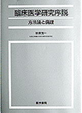

書評コーナー
薬のチェックは命のチェックで取り上げた書籍を紹介しています。
季刊誌20号より
臨床医学研究序説—方法論と倫理—
著者：砂原茂一 元国立療養所東京病院名誉院長 発行：医学書院 1988年
１７年前に書かれた本ですが、インフォームド･コンセントの考え方、無作為比較試験（RCT）、セカンド･オピニオンなど、現在にそのまま通じる臨床医のための研究の手法、倫理の手引書です。そして、臨床医だけでなく、ほかの医療従事者はもちろん、患者や一般の人が読んでも、医療の課題とあるべき姿を考えることのできる良書だと思います。
文章は明確な表現が用いられていて、臨床試験（本書ではわかりやすく、そしてまさに適切な表現で「人間実験」と呼んでいる）の歴史と本来の在り方について学べるようになっています。
臨床医学研究に携わる人間すべてが心得ているべきなのは、インフォームド･コンセントである、と著者は言っています。臨床試験（人間実験）はヒトを研究の対象にすることで成り立つものですが、過去には人間を単に研究材料として見て、患者が亡くなったり、疾患が悪化したりしても、経過を見るために放置することが多く行われてきました。このような人間を材料としか捉えない研究と、現代の臨床試験との違い、それは、インフォームド･コンセントの有無です。
未来の患者を治すかもしれない治療法を探すための研究で現在の患者をないがしろにしてはならないということは最も重要で基本的なことです。（しかし、それは研究者にとって最も欠如しやすいものの一つかもしれません。）実験に協力する被験者に実験の趣旨、意図、方法を明らかにしたうえで任意の協力を仰ぐという、臨床試験上のインフォームド･コンセントの考えがなければ、人体実験など行うべきではないと、著者は強く主張しています。
ともすれば名誉や経済的利益のために暴走しかねない研究者や企業を踏みとどまらせるのは、基本的な倫理感覚とルールです。そのガイドラインとして、1964年、世界医師会によって採択されたヘルシンキ宣言（人間における生物医学的研究を行う医師の手引のための勧告）なども紹介されています。特に、WHOと医科学国際組織評議会（CIOMS）の共同研究によるガイドラインなど、製薬会社、研究組織などがその属する国以外で人体実験を安上がりに行うことを防止するための国際的ガイドラインの果たす役割は大きいと本書は解説しています。
こういった規定やガイドラインの存在と中身を医療従事者のみならず、患者や臨床試験等の被験者も知ることで、トラブルを未然に防ぎ、臨床試験の正しいスムーズな進行が期待できると思います。本書はそのための医療従事者、医療消費者の双方が読むべきガイドブックとして、今でも古さを感じさせない優れた図書といえるのではないでしょうか。（く）
■単行本: 241 ページ 、 21cm／ ￥2,500 （税別）
ご購入はこちらからできます